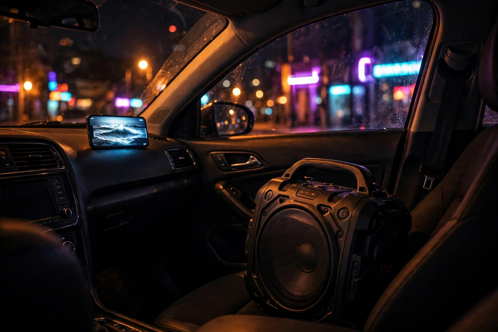
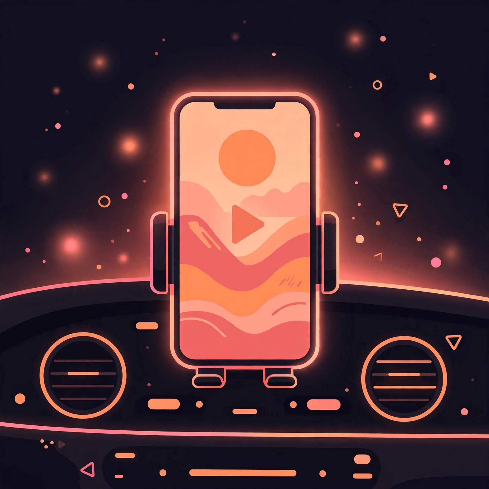
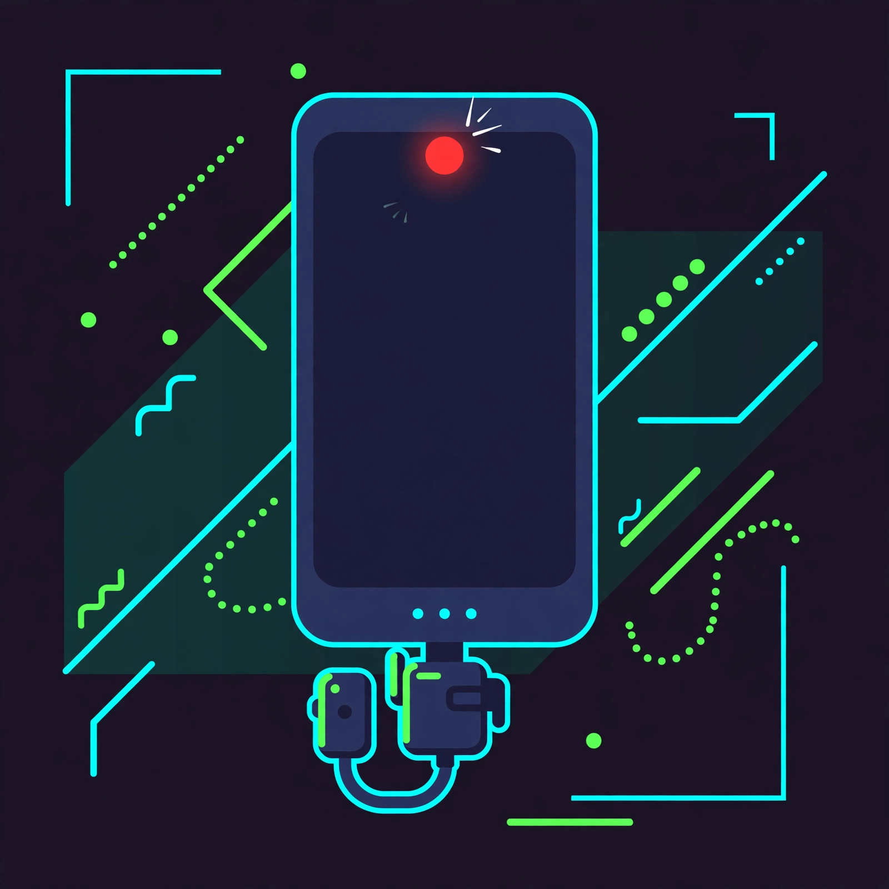
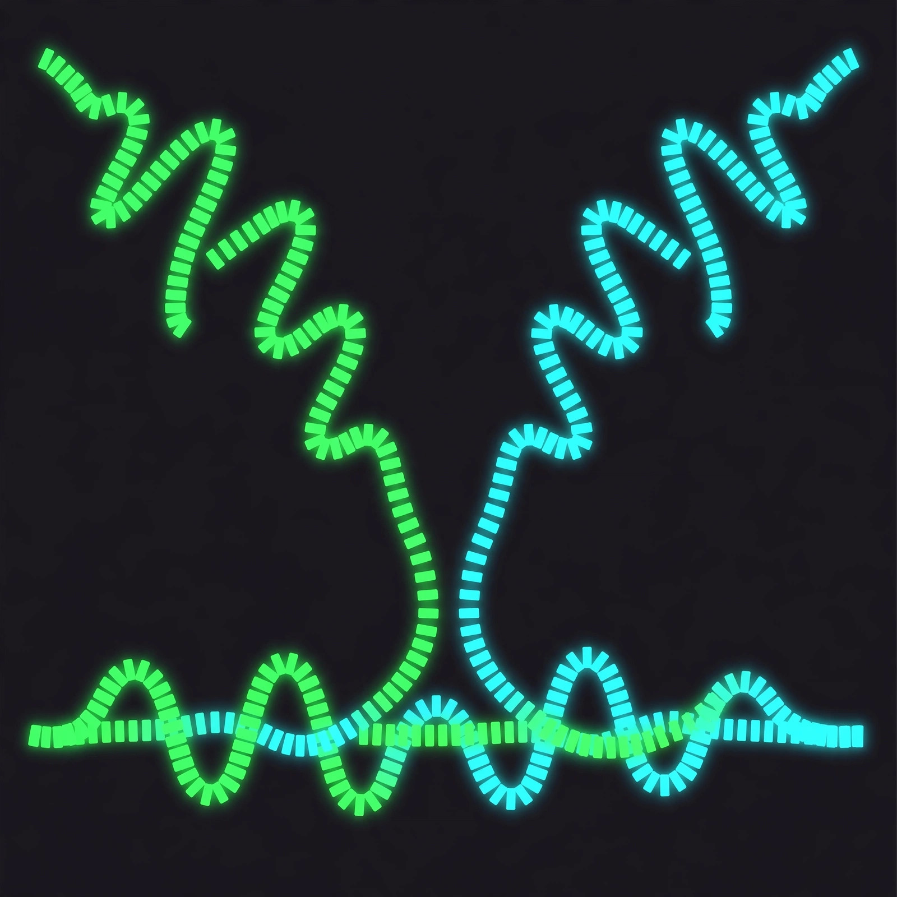

Karaoke Mix

Two phones, one take, a studio-clean result. Phone A sits on the dashboard and plays the YouTube karaoke. Phone B sits in the passenger seat on the soundbox, with the DJI receiver, and records the video and audio — it is closer to the singer, so it gives the better camera angle that fills the frame. This page takes Phone B's recording, finds the sync by itself, throws away the room sound of the music, and rebuilds the song from the clean digital track with only your voice on top.
Phone A sits on the dashboard and plays the YouTube karaoke video out loud. TX2 sits by its speaker and hears the music as it plays.
Phone B sits in the passenger seat on the soundbox, mounted to the soundbox grill. It carries the DJI receiver and records the video and audio. TX1 on you, voice only. Receiver in stereo — LED cyan, not green.
Splits the channels, matches the waveforms, discards the room recording, and exports the finished mix as a WAV.
Two things this page cannot do — read first
- The take must be recorded in the Camera app, not here. iPhone Safari records webpages with the phone's built-in mic and ignores the DJI receiver plugged into the phone — so a take recorded in a browser would lose your DJI mics entirely. Record in Camera, save to Photos, import below. There's a mic test in Step 2 so you can prove this on your own phone.
- Pasting a YouTube link does not download the song. No webpage can pull audio out of YouTube — there's no API for it and the browser blocks it. The link in Step 1 looks up the title and picture, labels the job, and builds the yt-dlp command for you. You run that command yourself in iSH, then import the downloaded file in Step 2.
High Tower District — Three-Phone Studio Monitor
Skip this and the two-phone workflow above still works. Add it when you want the best real-time feedback and the best studio result from this mobile setup. Phone C is a complete, independent monitor system: it records nothing, only listens and plays back through headphones in real time, and it never touches the recording chain — so the two-phone capture stays clean.
You need: a third iPhone, a second DJI Mic Mini set, headphones, and GarageBand — free, already on iPhone, and fully offline. No internet needed.
- Plug in the monitor receiver. Second DJI receiver into Phone C over USB-C. One transmitter on the singer, the second transmitter by Phone A on the dashboard, which is playing the karaoke.
- Set that receiver to mono — green LED. If it's cyan (stereo), double-press the linking button to switch. Mono puts voice and music equally in both ears, instead of voice in one ear and music in the other. Note: this is only the monitor receiver — the recording receiver on Phone B in the passenger seat stays in stereo, cyan.
- Headphones on Phone C — headphones only, never a speaker. A speaker monitor would bleed back into the recording microphone and pollute the isolated vocal.
- Open GarageBand, don't record. Start a new song, add an Audio Recorder track, and turn input monitoring on. Leave Record off — this phone is only listening.
- Sing and balance by ear. You hear your own voice against the track live. Too loud? Pull the microphone away. Too quiet? Lean in. That live balancing is the whole point of the monitor.
The monitor hears the room music through the second transmitter, not the clean digital track — and that's fine, because it's the same song at the same time and you're judging loudness, not timing. Any small monitor latency doesn't matter for the same reason. The final mix on this page still uses the clean track.
The song

Paste the YouTube link for the karaoke that Phone A plays on the dashboard. This looks up the title and thumbnail, names the job, and builds your yt-dlp download command — it does not fetch any audio. You download the track yourself in iSH (below), then import it in Step 2.
Download the clean track in iSH
- Open iSH and go into a folder where you have write permission — for example, type cd ~ and press Return. The command only works in a folder you are allowed to save files in. Stay in that folder for the next step.
- Copy the command below, paste it into iSH, and run it. It downloads this song and saves it in that folder as the video ID. The page does not download anything — this command does, on your phone.
- Import that exact file in Step 2. The page checks the filename against this link, so the right vocals can never land on the wrong song.
Paste a YouTube link above first.Run the same command again and it replaces the same file — it never leaves a second copy behind.
The two files

Import Phone B's take and the clean karaoke file you downloaded in Step 1. Everything is decoded and processed on this phone — nothing is uploaded anywhere.
First, move the take out of Photos
- Open Photos, pick the video of your take, tap Share, tap Save to Files, and save it to a folder you can find again. Then come back here and pick that saved file in A below.
The take is recorded in the Camera app on Phone B, so it lives in Photos — and this page cannot read Photos directly. Saving one copy to Files is the only way the page can open it. That one extra copy is expected; you can delete it from Files after the mix is done.
Phone B's Camera-app video, picked from Files after the Save to Files step above. Left channel should be your voice (TX1), right channel the music Phone A played in the room (TX2). If the page can't read a .mov directly, extract the audio in iSH with the command at the bottom and import the WAV instead.
The same karaoke Phone A plays on the dashboard, downloaded with the Step 1 command — this is where the clean music comes from. Use the file that command saved, named after the video ID. Video or audio file both work; only the audio is used.
Mic test — prove which mic Safari uses
This records a few seconds through the browser so you can check for yourself. Start it, walk across the room, and speak into the DJI transmitter — then tap the phone. If the tap is loud and your voice is faint, Safari is on the built-in mic, exactly as expected. That's why the real take happens in the Camera app.
Sync & mix

The page compares the loudness pattern of the right channel — the music as it played in the room — against the clean track, finds exactly where they line up, and shifts your voice by the same amount. Both mics ran through one receiver on one clock, so the voice lands in sync with zero drift. No clap needed.
Import both files in Step 2 to enable this.
Downloads
The finished mix is a stereo WAV, ready to drop under your video in Premiere — or to hand straight to the singer.
If you need them — the iSH commands
The page replaces most of these, but they stay here as the manual fallback. The first one is the same command Step 1 builds from your pasted link: it saves the track in the folder you run it from, named after the video ID, and replaces that file if you run it again.
yt-dlp -f bestaudio --extract-audio --audio-format wav "PASTE-YOUTUBE-URL"ffmpeg -i karaoke.mp4 -vn karaoke.wavffmpeg -i video.mp4 -filter_complex "[0:a]channelsplit=channel_layout=stereo[left][right]" -map "[left]" mic1.wav -map "[right]" mic2.wavWhy the second mic beats a clap
A clap gives you one instant to line up by eye, and your eyes are good to maybe a frame. The reference mic gives you the entire song as a timing ruler — thousands of beats and syllables of the same music, matched against the clean track by loudness pattern, landing within a few milliseconds.
And it can't drift. TX1 and TX2 both feed the same DJI receiver and are stamped by the same clock into one stereo file, so once the music is aligned, the voice is aligned by construction — at the start of the song and at the end. After alignment the room recording has done its job and is muted out of the mix; all that's left is your voice over the clean digital track.
That's the whole street version too: a singer hands you a YouTube link and sings into one mic while the other hears the room. You import two files, press one button, and hand back a production-quality mix — no clap, no manual dragging in a timeline, no speaker noise in the music.